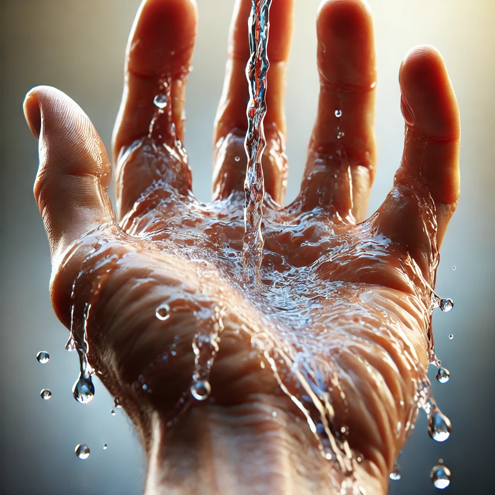

Vires-5 – Geïoniseerd Water (redox +700 mV, pH 7)
Ervaar gezond, antioxiderend water met een unieke balans: redoxwaarde +700 mV en pH 7. Perfect voor dagelijks gebruik, met focus op energie en hydratatie.

Waarom kiezen voor Vires-5?
Vires-5 is geen gewoon water. Dankzij de redoxwaarde van +700 mV en een neutrale pH van 7 levert het krachtige antioxidatieve eigenschappen zonder belasting voor het lichaam. Veel gebruikers rapporteren meer energie, betere hydratatie en meer helderheid in lichaam en geest.
Benieuwd hoe dit werkt? Lees meer over de rol van redox en ontdek de werking van geïoniseerd water.
Voordelen in het kort
- Sterke antioxidatieve eigenschappen (redox +700 mV)
- Neutrale pH 7 – mild en geschikt voor dagelijks gebruik
- Geproduceerd met zorg.
- Beschikbaar in meerdere formaten – van 1L tot 1000L
Klaar om zelf het verschil te ervaren? Bestel Vires-5 of vraag een proefpakket aan.
Contact & Bestellen
Liever meteen bestellen? Ga naar de productpagina of stuur je gegevens via de contactpagina.